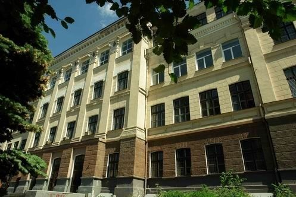

Свої витоки факультет прикладної математики бере з фізико-математичного факультету Дніпропетровського університету. Саме на цьому факультеті у 1959 році було створено кафедру обчислювальної математики.
Першим завідувачем кафедри став Віктор Михайлович Чернишенко. У 1967 році, разом з доцентом Давидом Борисовичем Тополянським, вони відкрили в Дніпропетровському університеті спеціалізацію з обчислювальної математики, перші 25 випускників якої отримали дипломи у 1969 році. Паралельно з розвитком обчислювальної техніки (першою ЕОМ у ДДУ був "Урал-1", потім були встановлені "Мінськ-22", М-222, машини ряду ЕС, ряду СМ тощо) змінювались вимоги до фахівців, що навчалися користуватися ними. У 1970 році в СРСР була впроваджена нова спеціальність "Прикладна математика", і Дніпропетровський університет потрапив до числа опорних університетів, які розпочали підготовку спеціалістів. Нова спеціальність ставала дедалі популярнішою, заявки на підготовку фахівців з прикладної математики надходили з усіх регіонів СРСР.
Безпосередньо історія факультету починається з 1984 року, коли за ініціативою ректора Володимира Івановича Моссаковського було створено факультет прикладної математики. Першим деканом факультету став Віктор Захарович Грищак. У 1986 році на факультеті створено нову кафедру ? кафедру математичного моделювання, у 2001 році до факультету переведено кафедру комп'ютерних технологій, яка до того відносилася до факультету міжнародної економіки.
У 1990 році на кафедрі математичного забезпечення ЕОМ відкривається нова спеціальність ? "Програмне забезпечення автоматизованих систем". Нові спеціальності відкривалися на кафедрах факультету й у подальші роки. У 1996 році на кафедрі комп'ютерних технологій було відкрито спеціальність "Інформатика" (спеціалізація "Інформатика банківської справи"), з 1998 року на кафедрі обчислювальної математики та математичної кібернетики почалась підготовка фахівців за спеціальністю "Інтелектуальні системи прийняття рішень", а з 2008 року на кафедрі обчислювальної математики та математичної кібернетики почалася підготовка фахівців за напрямом "Системний аналіз".
На факультеті навчається близько 727 студентів за денною формою; для них функціонують математичний кабінет, 8 комп'ютерних класів, їдальня. Навчальний процес забезпечують 4 кафедри, де працює 8 професорів, 38 доцентів, 33 старших викладачів і асистентів, 10 наукових співробітників.